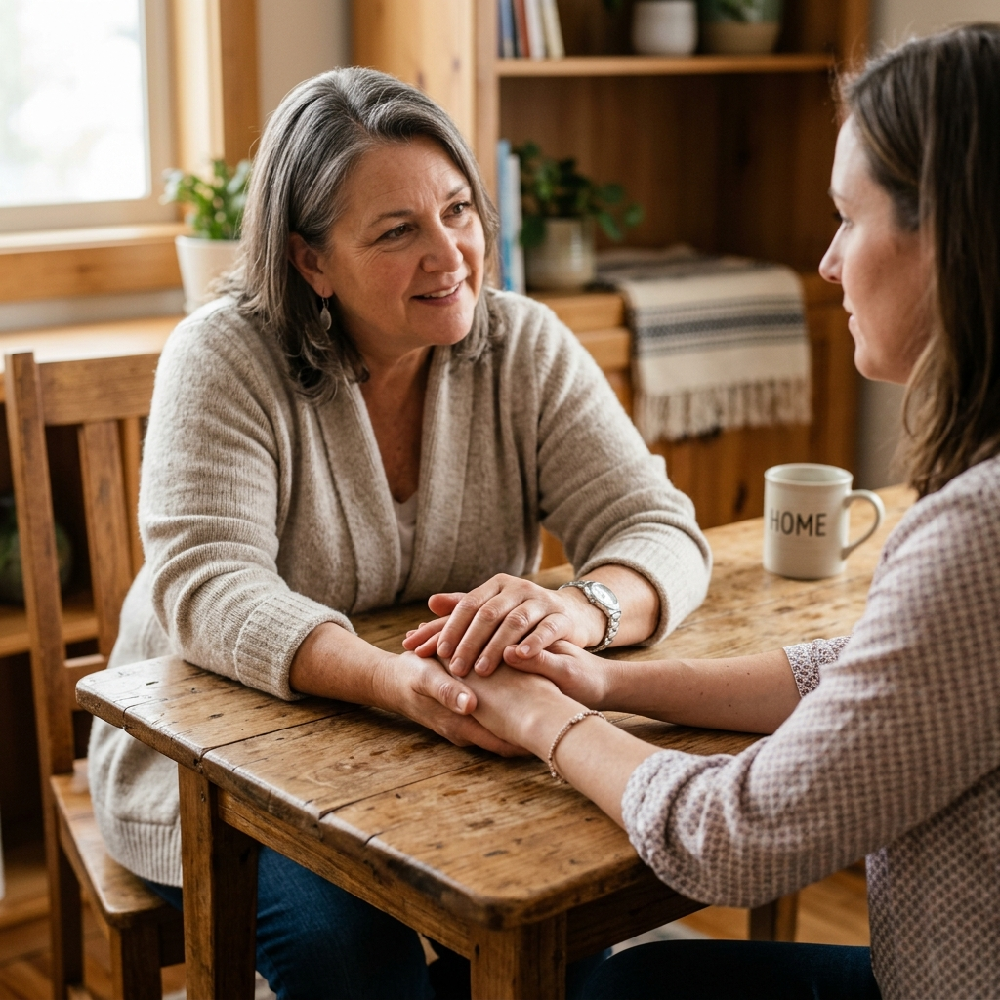

Lancement de nos permanences d'écoute
Dès ce mois-ci, Sonia ASBL met en place des permanences téléphoniques et physiques bi-mensuelles pour accueillir les parents en recherche d'écoute.
Lire l'article sur le lancement de nos permanencesRestez informé de nos activités à Bruxelles, de nos prochains ateliers de répit pour les parents, et accédez à nos fiches de conseils pratiques.
Retrouvez ici les nouvelles de l'ASBL et les questions-réponses pour vous aider.
Dès ce mois-ci, Sonia ASBL met en place des permanences téléphoniques et physiques bi-mensuelles pour accueillir les parents en recherche d'écoute.
Lire l'article sur le lancement de nos permanences
Un moment d'une rare intensité émotionnelle où 12 mamans et papas ont pu échanger sur le sentiment de solitude face au diagnostic du handicap.
Lire l'article sur le retour de notre groupe de parole
Quelles sont les allocations d'intégration (familles avec enfant handicapé) et comment effectuer votre demande auprès du SPF Social ?
Lire le guide sur les aides financières en BelgiqueRetrouvez les questions les plus courantes posées par les parents qui nous contactent.
Des réponses claires à vos questions importantes.
Le premier contact se fait généralement par téléphone, WhatsApp ou e-mail. Nous planifions ensuite une rencontre simple et informelle chez vous ou dans nos bureaux pour faire connaissance, sans aucune démarche contraignante.
Vous pouvez nous téléphoner, nous envoyer un message WhatsApp ou un e-mail. Ensuite, nous nous rencontrons simplement pour faire connaissance.
Non. L'ensemble de nos services d'écoute, d'orientation administrative et de participation aux groupes de parole est entièrement gratuit pour les familles. L'ASBL fonctionne grâce aux dons et aux subventions.
Non. Notre aide, nos conseils et les groupes de parole sont gratuits. Vous ne devez rien payer.
Le parrainage est un accueil partiel et bénévole (par exemple, un week-end par mois et/ou une semaine pendant les vacances scolaires) d'un enfant en situation de handicap par un parrain ou une marraine (célibataire ou en couple). Il permet aux parents de s'accorder un moment de répit tout en offrant à l'enfant une ouverture sociale enrichissante.
Un bénévole accueille votre enfant 1 week-end par mois. Cela vous permet de vous reposer. L'enfant fait des sorties et s'amuse.
Il n'y a pas de profil type, mais il est nécessaire de résider à Bruxelles ou dans sa périphérie (max. 50 km). Devenir parrain est un engagement sérieux : le processus comprend une série d'entretiens (environ 8 rencontres sur une période de 6 mois) avec notre équipe pluridisciplinaire, ainsi qu'une formation, pour garantir l'adéquation et la sécurité du projet de parrainage.
Il faut habiter à Bruxelles ou à côté (moins de 50 kilomètres). Nous faisons 8 discussions avec vous pendant 6 mois pour savoir si vous êtes prêt.
Non, le parrainage est une action entièrement bénévole et citoyenne. Cependant, l'ASBL prend en charge les frais liés au quotidien de l'enfant (nourriture, activités) durant ses séjours chez vous, ou via des indemnités forfaitaires pour ne pas peser sur le budget du parrain.
Non. Le parrainage est gratuit et bénévole. Mais l'ASBL paye les repas et les sorties de l'enfant pendant l'accueil.
Sonia ASBL concentre principalement ses actions directes (comme le parrainage ou la halte-accueil "La Récré") sur les enfants et adolescents (0-18 ans) et leurs parents. Pour les adultes, nous travaillons en réseau étroit avec des partenaires spécialisés à Bruxelles comme Sapham ASBL ou d'autres services d'accompagnement pour assurer une transition fluide vers l'âge adulte.
Non, nous aidons surtout les enfants de 0 à 18 ans. Pour les adultes, nous vous orientons vers des partenaires spécialisés comme Sapham ASBL.
Oui. Conformément à la législation belge, tout don égal ou supérieur à 40 € par année civile fait l'objet d'une attestation fiscale. Celle-ci vous donne droit à une réduction d'impôt de 45% sur le montant versé.
Oui, si vous donnez 40 € ou plus dans l'année. L'État vous rend 45% de cette somme en réduction d'impôt.
Le processus comprend un premier entretien téléphonique ou une rencontre, une visite à domicile par notre éducateur pour comprendre les besoins spécifiques de votre enfant (handicap physique, mental, sensoriel ou autisme), puis une mise en relation progressive avec un parrain agréé.
Appelez-nous ou écrivez-nous. Nous venons vous voir à la maison pour discuter et trouver le meilleur parrain pour votre enfant.
Sonia ASBL intervient dans toute la Région de Bruxelles-Capitale (les 19 communes). Pour le parrainage de répit, nous acceptons également les familles et les parrains habitant dans un Brabant (wallon ou flamand) dans un rayon de 50 km autour de Bruxelles.
Nous travaillons dans toute la ville de Bruxelles et autour jusqu'à 50 kilomètres.
La halte-accueil « La Récré » est une garderie spécialisée en journée (pour quelques heures) pour les enfants de 0 à 6 ans. Le parrainage de répit est un accueil à domicile chez un bénévole agréé, pendant le week-end ou les vacances, pour les enfants de 0 à 18 ans.
La halte-accueil est une garderie pour quelques heures en journée (enfants de 0 à 6 ans). Le parrainage est un accueil chez un bénévole pour le week-end (enfants de 0 à 18 ans).